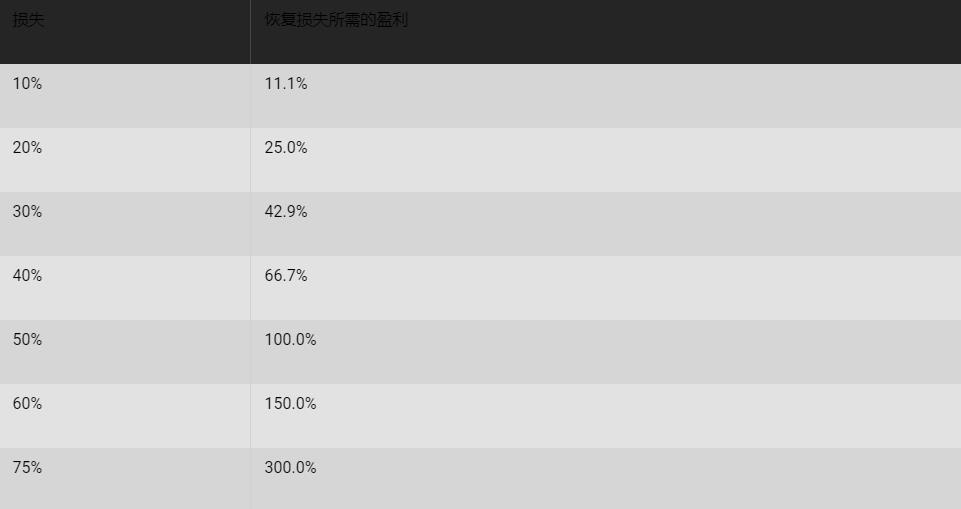

<!DOCTYPE html>
<html>
</html>
<head>
  <meta charset="utf-8">
  <meta http-equiv="X-UA-Compatible" content="IE=edge">
  <title>外汇站（fx-z.com） - 保证金和杠杆</title>
  <meta name="description" content="">
  <meta name="viewport" content="width=device-width, initial-scale=1">
  <meta name="robots" content="all,follow">
  <!-- Bootstrap CSS-->
  <link rel="stylesheet" href="vendor/bootstrap/css/bootstrap.min.css">
  <!-- Font Awesome CSS-->
  <link rel="stylesheet" href="vendor/font-awesome/css/font-awesome.min.css">
  <!-- Google fonts - Roboto-->
  <link rel="stylesheet" href="https://fonts.googleapis.com/css?family=Roboto:400,300,700,400italic">
  <!-- owl carousel-->
  <link rel="stylesheet" href="vendor/owl.carousel/assets/owl.carousel.css">
  <link rel="stylesheet" href="vendor/owl.carousel/assets/owl.theme.default.css">
  <!-- theme stylesheet-->
  <link rel="stylesheet" href="css/style.default.css" id="theme-stylesheet">
  <!-- Custom stylesheet - for your changes-->
  <link rel="stylesheet" href="css/custom.css">
  <!-- Favicon-->
  <link rel="shortcut icon" href="img/favicon.png">
  <!-- Tweaks for older IEs--><!--[if lt IE 9]>
    <script src="https://oss.maxcdn.com/html5shiv/3.7.3/html5shiv.min.js"></script>
    <script src="https://oss.maxcdn.com/respond/1.4.2/respond.min.js"></script><![endif]-->
</head>
<body>
  <div id="all">
    <div class="container-fluid">
      <div class="row row-offcanvas row-offcanvas-left"> 
        <!--   *** SIDEBAR ***-->
        <div id="sidebar" class="col-md-4 col-lg-3 sidebar-offcanvas">
          <div class="sidebar-content">
            <h1 class="sidebar-heading"> <a href="https://fx-z.com">fx-z.com</a></h1>
            <p class="sidebar-p">介绍外汇相关的基本知识，告诉您如何进行自己的技术面和基本面分析，讲解先进的交易理念，并且为您阐述失败交易者与专业交易者之间的真正区别。 </p>
            <p class="sidebar-p">通过这些课程的学习，您将学会如何根据自己的优势来应用情绪分析，还将了解真实世界的事件会对货币汇率产生什么影响，央行在外汇市场中所发挥的作用，以及交易者在颇受欢迎的即期外汇交易中有哪些选择方案。 </p>
            <ul class="sidebar-menu">
                <!-- Link-->
                <li class="sidebar-item"><a href="https://fx-z.com" class="sidebar-link">首页</a></li>
                <!-- Link-->
                <li class="sidebar-item"><a href="cihui.html" class="sidebar-link">外汇词汇</a></li>
                <!-- Link-->
                <li class="sidebar-item"><a href="ebook.html" class="sidebar-link">获取外汇电子书</a></li>
            </ul>
            <p class="social"><a href="https://www.forextimechina.com.cn/zh?form=IZIN" target="_blank"data-animate-hover="pulse" class="external facebook"><i class="fa fa-eur"></i></a><a href="https://www.forextimechina.com.cn/zh?form=IZIN" target="_blank" data-animate-hover="pulse" class="external gplus"><i class="fa fa-gbp"></i></a><a href="https://www.forextimechina.com.cn/zh?form=IZIN" target="_blank" data-animate-hover="pulse" class="external twitter"><i class="fa fa-rmb"></i></a><a href="https://www.forextimechina.com.cn/zh?form=IZIN" target="_blank" title="" class="external instagram"><i class="fa fa-dollar"></i></a><a href="https://www.forextimechina.com.cn/zh?form=IZIN" target="_blank" data-animate-hover="pulse" class="email"><i class="fa fa-money"></i></a></p>
            <div class="copyright text-center text-md-left">
             
              
            </div>
          </div>
        </div>
        <!--   *** SIDEBAR END ***  -->
        <!--   *** DETAIL ***-->
        <div class="col-md-8 col-lg-9 content-column white-background">
          <div class="small-navbar d-flex d-md-none">
            <button type="button" data-toggle="offcanvas" class="btn btn-outline-primary"> <i class="fa fa-align-left mr-2"></i>菜单</button>
            <h1 class="small-navbar-heading"> <a href="https://fx-z.com/1-12.html">下一篇 </a></h1>
          </div>
          <div class="row">
            <div class="col-xl-10">
              <div class="content-column-content">
                <h1>保证金和杠杆</h1>
          <p>
    保证金是您为了开始交易而必须交纳给经纪商的资金。从技术上而言，保证金有两种形式——初始保证金（您为了开始交易而存入账户的初始金额），以及维持保证金（经纪商要求您额外交纳，用以保证您的本金与借入资金成正确比例的资金）。
</p>
<p>
    如果您的交易规模较小，您几乎很难负担外汇合约的全部成本（例如 10,000 美元）。例如，您的头寸进入利空行情，但尚未触及您的止损位。优秀的经纪商会通知您还有多少剩余时间来为账户充值，通常是到下一个工作日结束前截止，有时是在中午之前。经纪商致电给您的行为被称为“保证金追缴”，而且这总是意味着您对某些情况判断错误。其中，以后种情况居多。
</p>
<p>
    外汇市场中，几乎所有人都进行保证金交易，而保证金交易是指借钱交易。
</p>
<p>
    您在股市中获得的杠杆大部分是两倍杠杆（1:2），意即您可以借到目标头寸的 50%。 若要买入价值为 1,000 美元的标的物，您需要承担一半金额的“初始保证金”，即 500 美元。
</p>
<p>
    但是在外汇中，您能够获得 50 倍杠杆（1:50）。这意味着，如果您的起始本金为 500 美元，您可以对一种证券进行当前市场价为 50 倍的交易，即 25,000 美元。美国于 2010 年颁布规定，要求对交易量较少的货币所持有的最大杠杆为 10 倍（1:10），例如 USD/MXN （美元对墨西哥比索）。但美国境外的经纪商可以为您提供 1:400、1:500，甚至更高的杠杆比例。1:500 杠杆意味着，对于 500 美元的起始本金，您可以买到价值高达 250,000 美元的货币。
</p>
<p>
    500 美元是您的起始本金，剩下的 24,500 美元是您以 50 倍杠杆借入的资金。初始保证金是一种由您提供给出借方（经纪商）的抵押品，作为一种“良好的信用”姿态。芝加哥商品交易所使用老式说法“履约保证金”来形容初始保证金。维持保证金是您必须提供的额外资金，以确保自有资金与借入资金保持正确的比例。维持保证金取决于一个以“逐日盯市”或 MTM 开始的程序。
</p>
<p>
    逐日盯市是评估每日闭市时以收盘价（或者期货结算价）计算的头寸价值。比如，您以 1.6000 买入 GBP/USD 迷你合约，然后它下跌 40 个点，收盘于 1.5960。每个点价值 10 美元，因此您亏损 400 美元。您的经纪商打电话给您称，如果您不为账户充值以维持最低保证金，他将对您亏损 400 美元的账户斩仓，而且这些亏损仍然由您承担。
</p>
<p>
    显然，您未能设置正确的止损位，无法避免这次保证金追缴。芝加哥商品交易所在官网上公布了它对初始保证及和维持保证金的算法。芝加哥商品交易这一程序制定于 1988 年，被称为 SPAN，即标准投资组合风险分析。人们花费 10 美元即可使用这种算法（自 1999 年以后），但使用之前，您最好事先熟悉电子表格的使用。其基础原理是：交易所将波动性因素应用于每种货币，以确定需要追加保证金的可能性。
</p>
<p>
    对于期货，交易所规定初始保证金的具体数额取决于货币的波动性。对于零售即期外汇，经纪商对不同货币收取的初始保证金并无差别，但收取维持保证金时，他们借鉴了芝加哥商品交易所的做法。零售即期经纪商怎样计算初始保证金和维持保证金？通常，他们要求客户交纳最低保证金以及“缓冲金”，因为保证金追缴管理是很费功夫的。例如，如果一手为 1,000 美元且杠杆比例为 1:50，则初始保证金通常是 2% 或 20 美元，但是需要追加的缓冲金却各有不同：波动性较低的货币（加元）为 20 美元，波动性中等的货币（欧元）为 32 美元，而波动性较高的货币（英镑）为 38 美元。许多经纪商的平台还提供保证金追踪器，以便您在面临保证金追缴风险时能获得提醒。
</p>
<p>
    显然，如果您的头寸仅亏损一小部分就很容易被经纪商斩仓，那么将杠杆做到最大无疑是让您走上破产之路的必然方法。因此，大多数经纪商不建议交易者使用最高杠杆，因为一次随机的价格拐点可能会让您一无所有。
</p>
<p>
    杠杆能成倍放大盈利和亏损。了解亏损的严重程度是非常重要的。
</p>
<p>
    比如说，您用 10,000 美元开始交易，而首笔交易导致本金亏损 20% 或 2,000 美元。现在，您必须获得 25% 的盈利才能回到起点。而且，您只能使用更少的本金来完成这 25% 的盈利，即 8,000 美元。通过 1:50 杠杆，您可以控制面值为 400,000 美元的金额，而不是以前的 500,000 美元。假设您再次亏损 20% 或 1,600 美元。此时，您需要盈利 67% 才能回到起点。不难看出，如果您首先就亏损 4-5 个交易，您很容易破产。下表显示恢复损失所需的盈利。
</p>
<p>
    恢复损失
</p>
<p>
    
</p>
<p>
    您需要问问自己，亏损 50% 之后盈利 100% 的几率有多大。即使您刚好抓住了这种可能性不大的几率，您也必须承认，一次性盈利 100% 的可能性极低。事实上，这种可能性几乎为零。
</p>
<p>
    因此，新手交易者几乎总是亏损，而且市场观念也是这样认为。新手的亏损幅度往往大于盈利幅度，最终导致为了恢复损失而所需获得的盈利过高，基本难以实现。一项重要的经验是，外汇市场中的高杠杆是尤其危险的。
</p>
<p>
    <strong>建议：您不必将所有可用杠杆用完。</strong>
</p>
<p>
    <br/>
</p>
<p>
    <br/>
</p>
              </div>
            </div>
          </div>
        </div>
      </div>
    </div>
  </div>
  <!-- JavaScript files-->
  <script src="vendor/jquery/jquery.min.js"></script>
  <script src="vendor/popper.js/umd/popper.min.js"> </script>
  <script src="vendor/bootstrap/js/bootstrap.min.js"></script>
  <script src="vendor/jquery.cookie/jquery.cookie.js"> </script>
  <script src="vendor/owl.carousel/owl.carousel.min.js"></script>
  <script src="vendor/masonry-layout/masonry.pkgd.min.js"></script>
  <script src="js/front.js"></script>
</body>